This program showcases different features that I have done that the user can input
Features include: Getting the hamming distance between words, Converting number to text, Hex calculation, Most frequent letters in a string, Money calculation
Below is a video to showcase the application being used (no audio)
This program is a RPG Game prototype where every turn, an event happens and the hero either faces an enemy or gets items. Each entity is represented by a class and getters and setters.
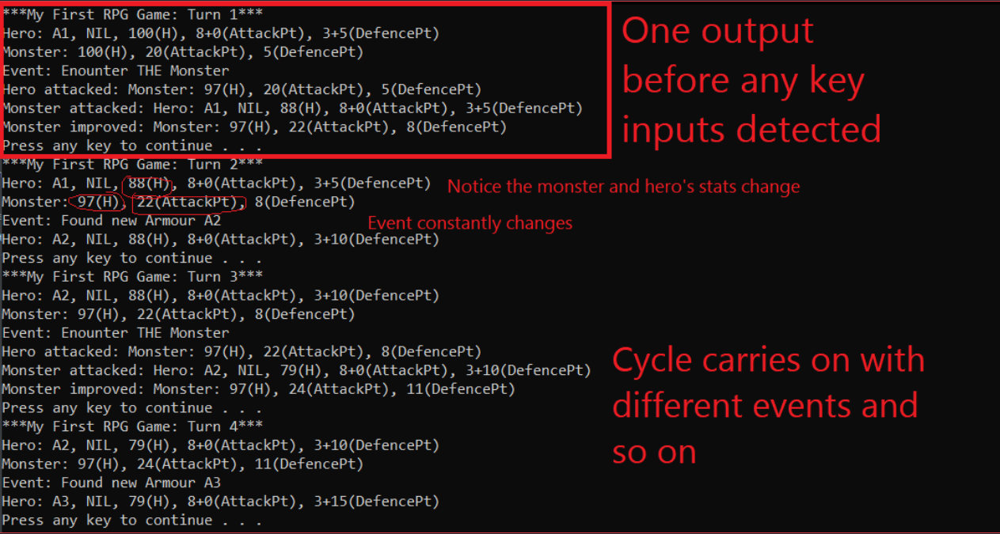
Game Information: This is a text-based maze game where the player can switch between different maze maps to get to the end point
Below are screenshots for clearer view
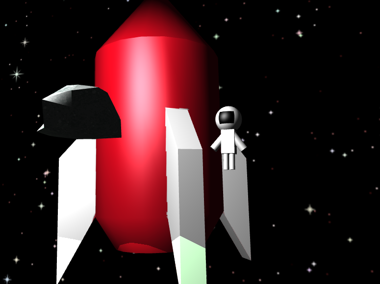
This is a Computer Graphics showcase that showcases the different uses of 3D Models, colored lighting, skybox, RGB colors and Alpha
This video showcases more features, including animating spritesheet, lighting and shadows, particle system, moving UV map, multi-texturing
Below are screenshots explaining the different features shown in the video
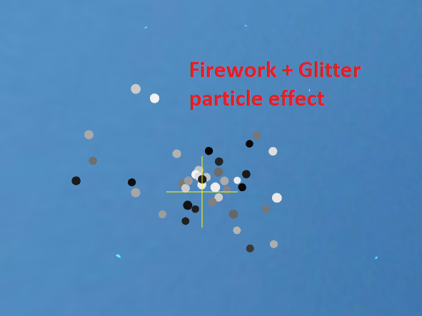
This video briefly showcases a program that has different game features commonly seen in most games
Below are screenshots with clearer view of all the features
Common Game Features
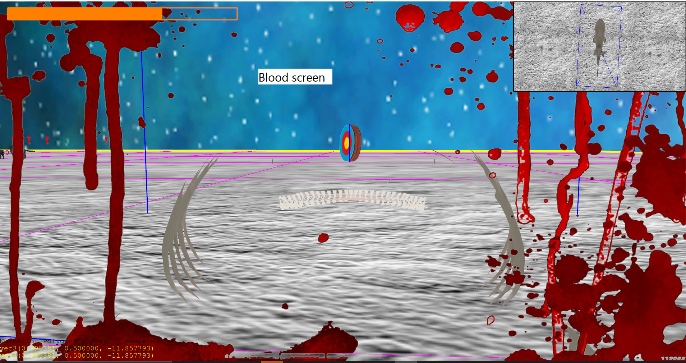
Optimising Program Features and Waypoint system AI
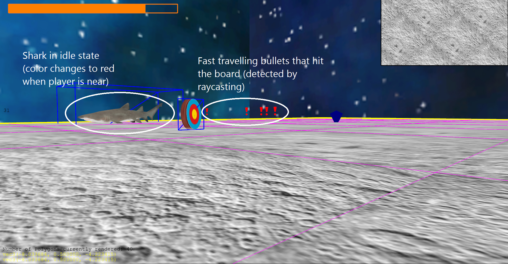
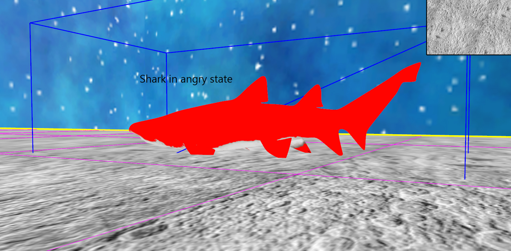
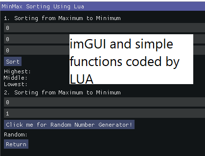
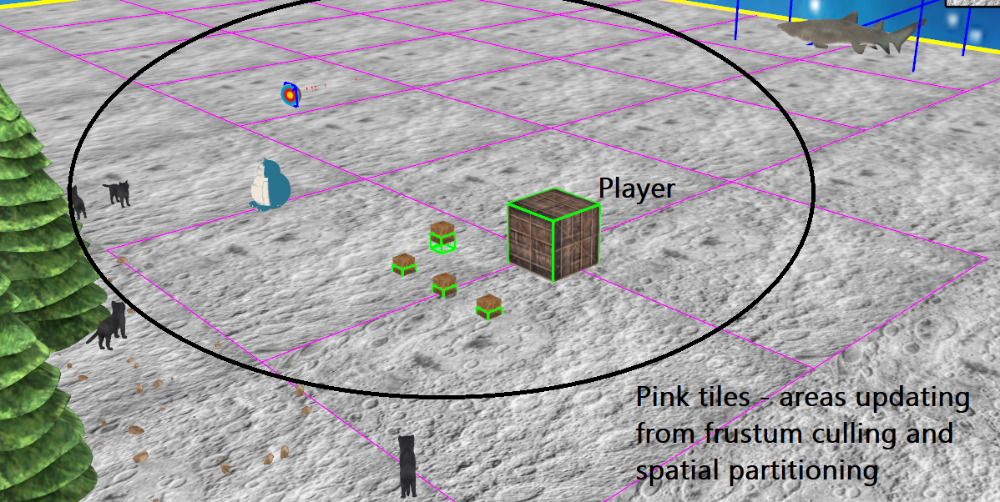
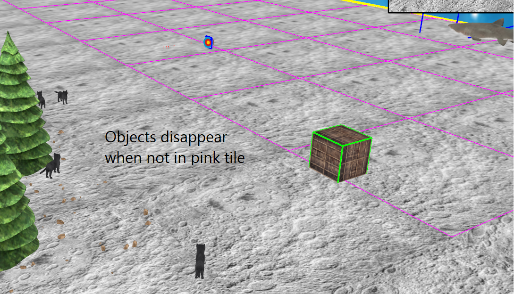
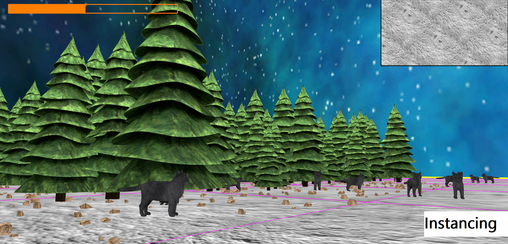
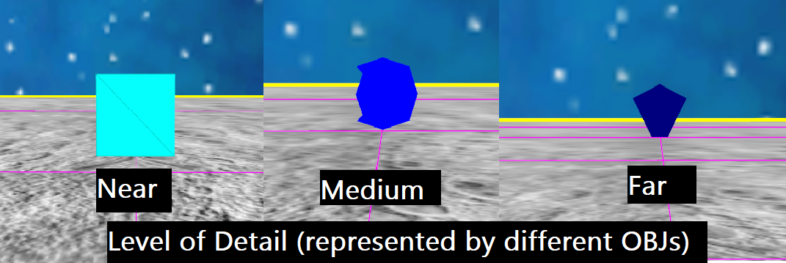
This is a game project that was made using Unity with Photon PUN package.
This is a chat system created with client on Unity, and server on Visual Studio
The video showcases the launching of the server, and 2 clients with welcome message auto-generated from the server.
This is a video showcasing use of state machines in AI (where the characters' icons constantly change)
This video showcases use of different AI techniques like Breadth-First Search, Depth-First Search through a hexagon-tiled map
This is a game made with my friend that can be played on Android.
Click to launch another website made previously about myself